10 Things I've
Learned from
Sass Plugins
1. Grammar proof your selectors.
Grammar proof your selectors.
2. Chain import statements.
Chain your import statements.
3. Use objects for configs.
Use objects for configs.
Access the config object with getters and setters.
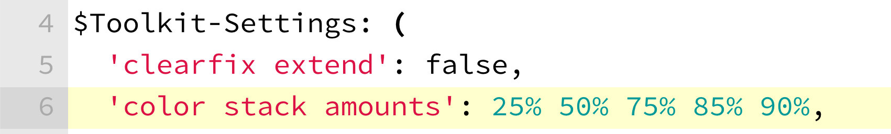
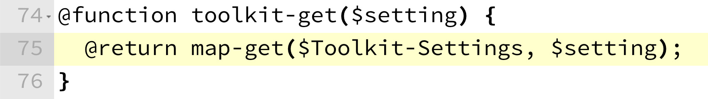
4. Use lots of Sass Partials.
Use lots of Sass Partials.
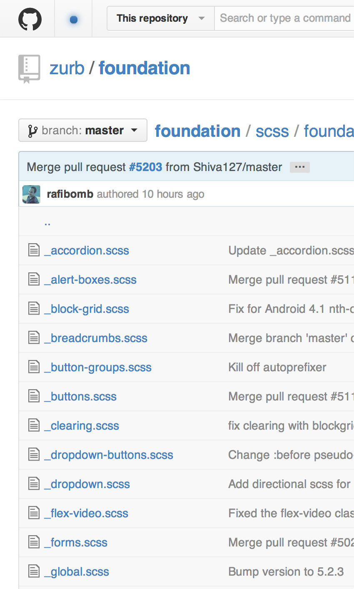
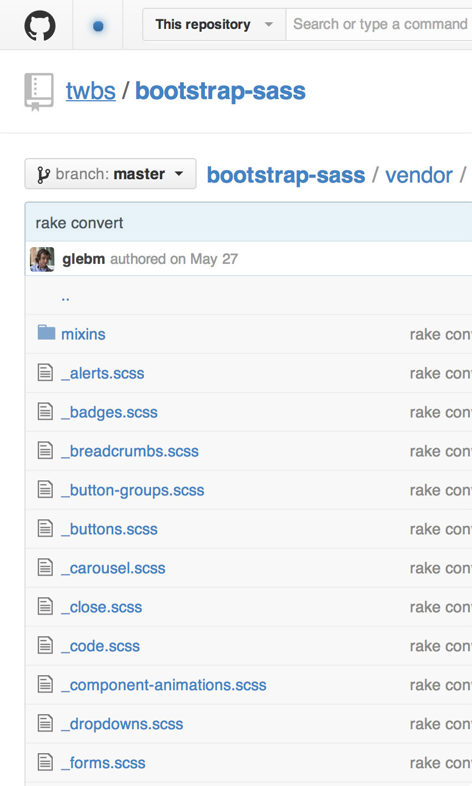
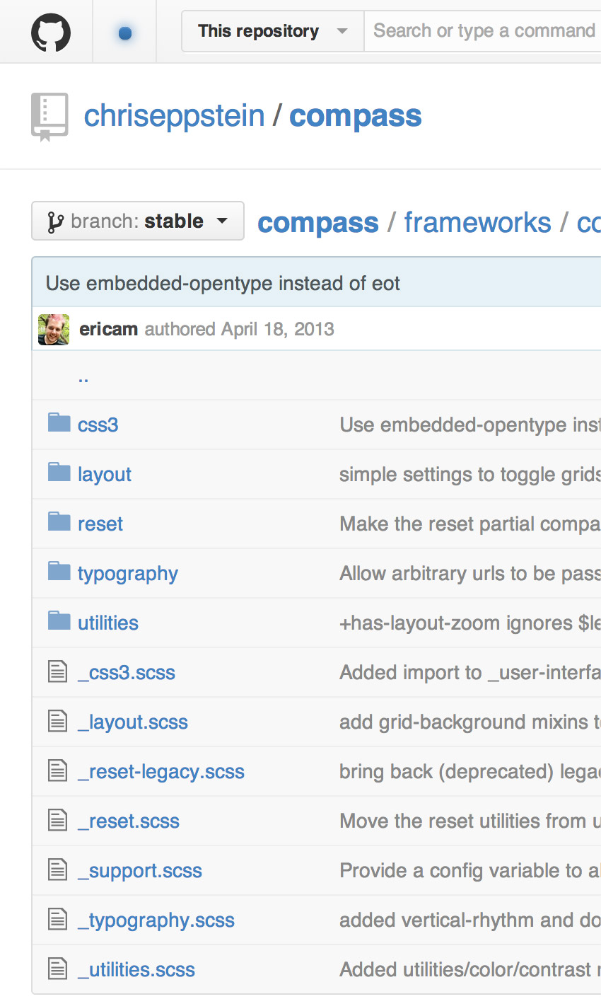
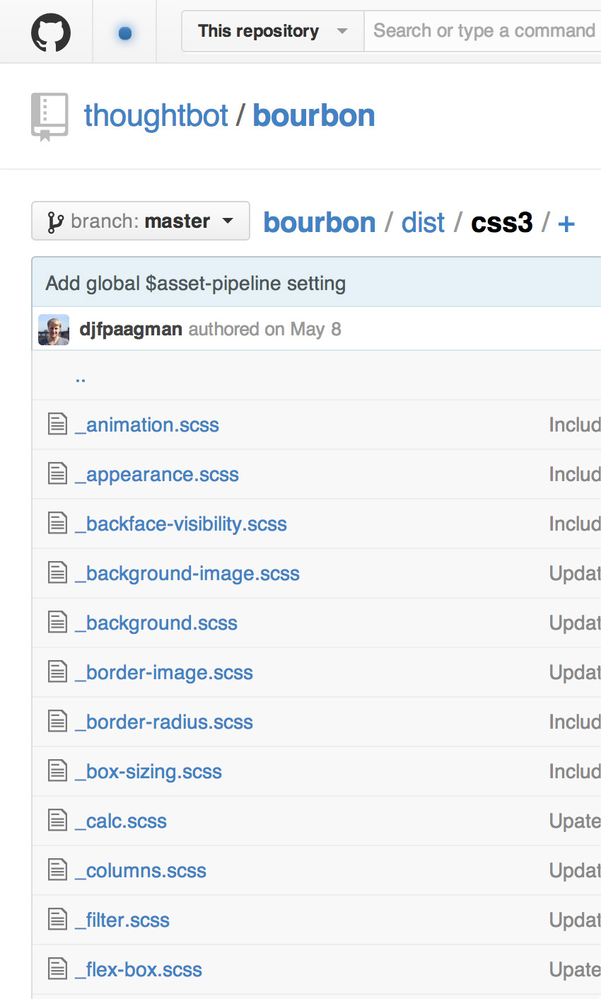
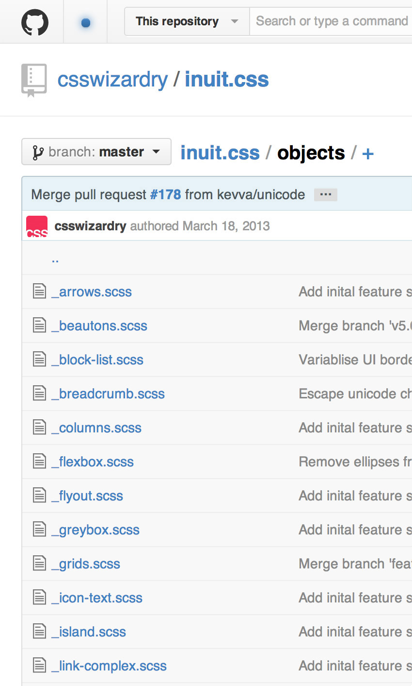
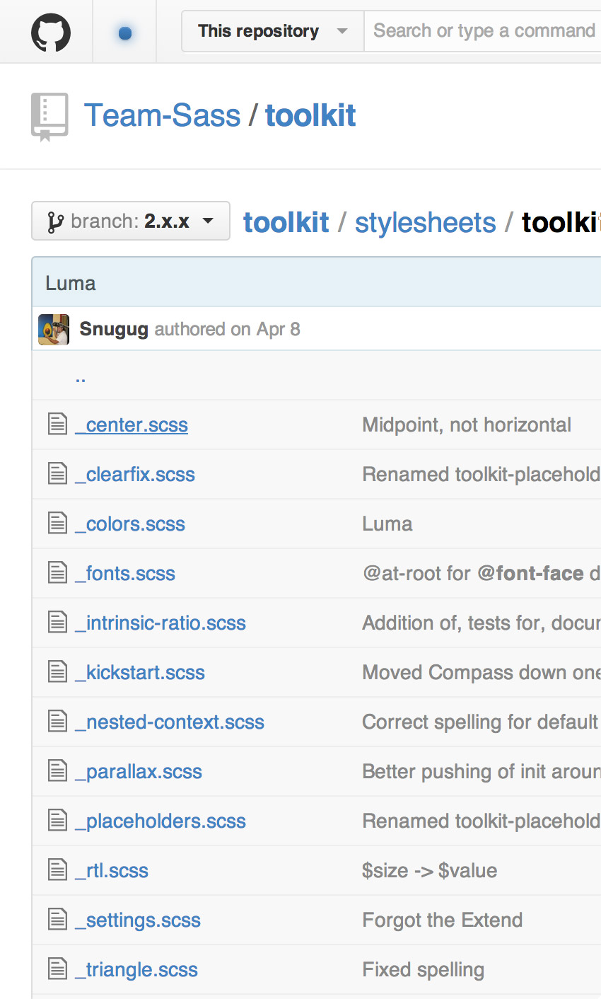
5. Document inline.
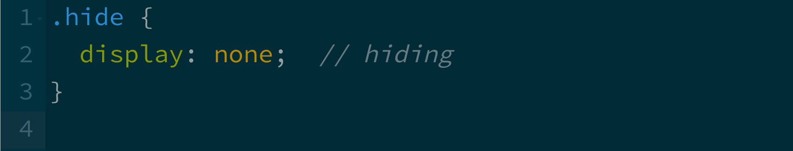
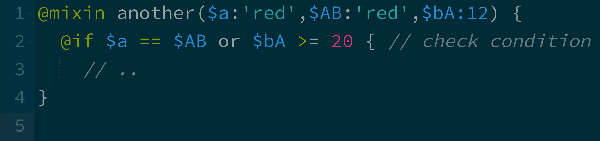
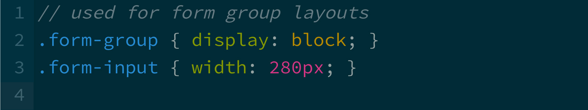
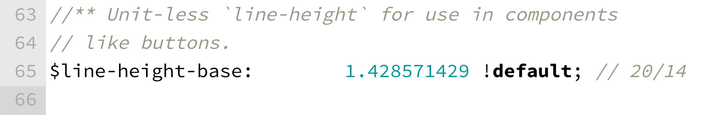
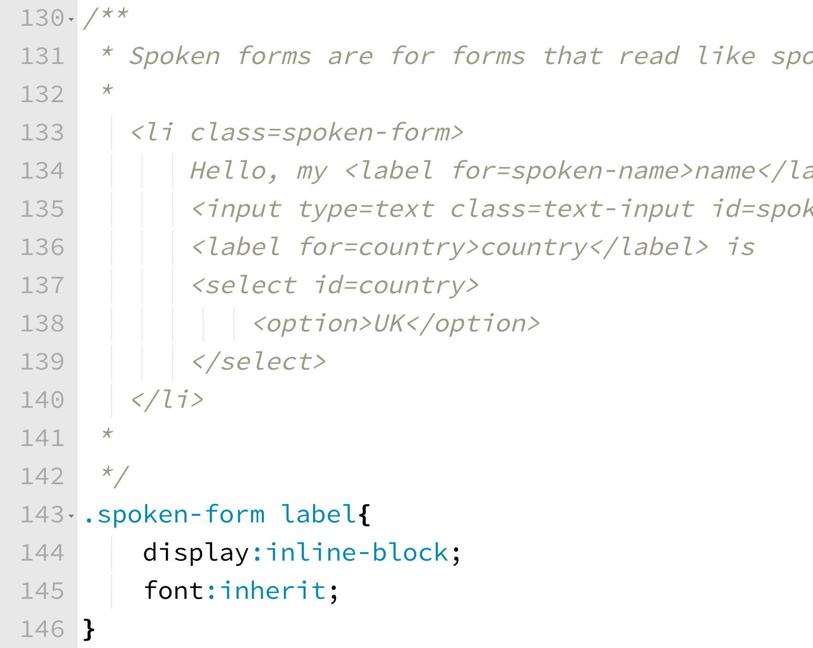
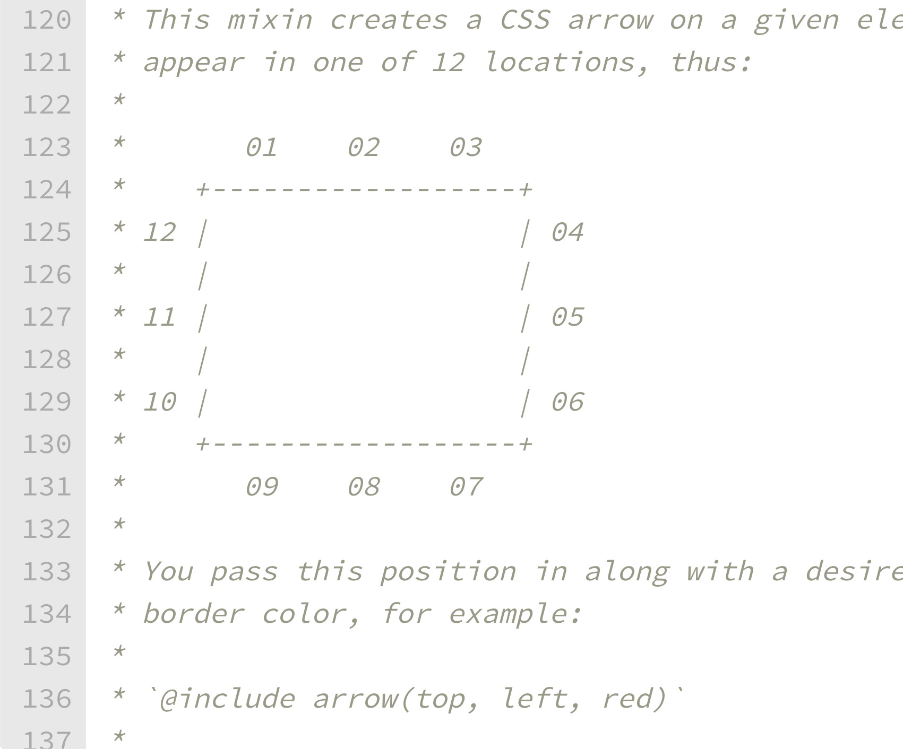
6. Mixin libraries are cheap
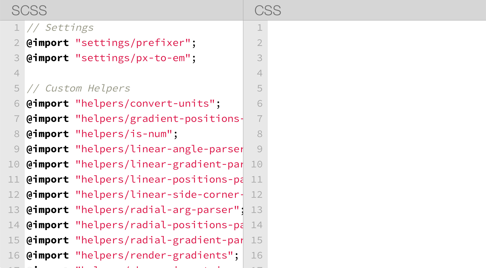
.. or optionally output CSS
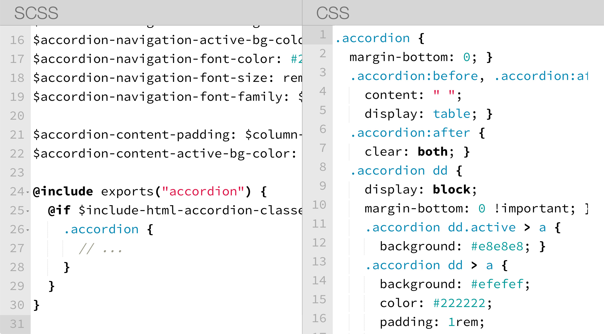
7. Use a debug flag.
Use a debug flag.
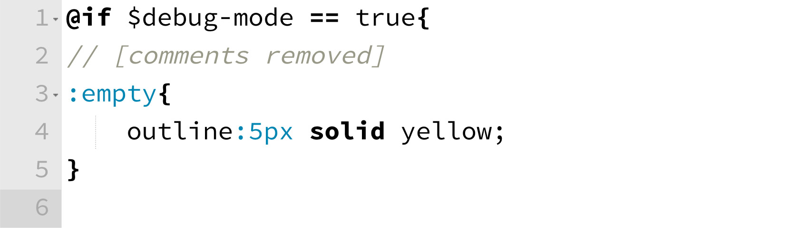
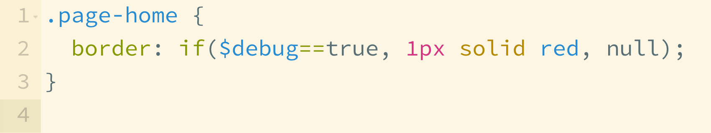
8. Format your mixin parameters
so they are easy to read.
Format your mixin parameters
so they are easy to read.
9. Guard arguments
.. check for empty arguments
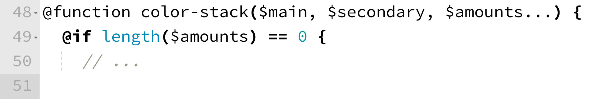
.. predefine optional arguments with null
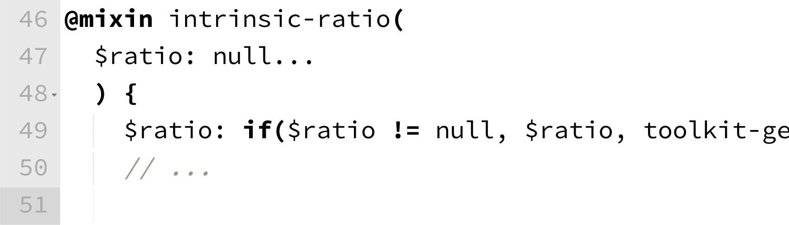
.. guard the argument order
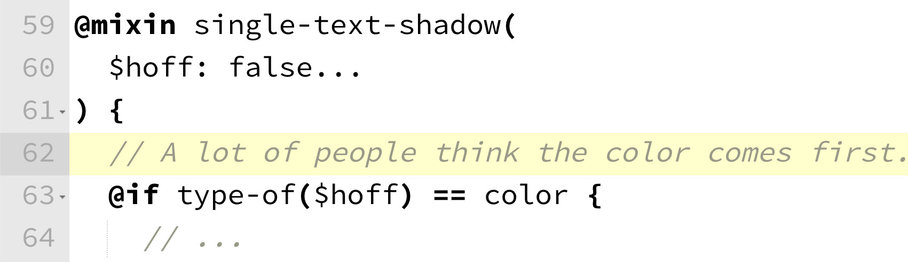
10. Don't be too serious.